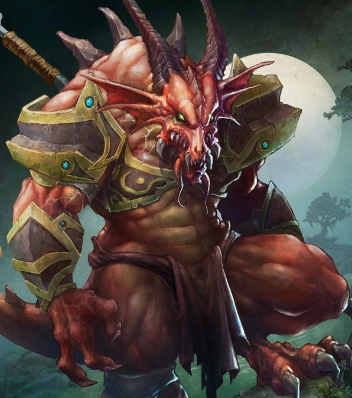

Playable Races > Dragonkin
Reptilian creatures that served as footmen in the Dragon God's armies for millenia, recently endowed with sentience. Free will has curbed their instinctive lust for destruction, and like all worshippers of the Dragon God, they live by a code of honor that values fairness.
Dragonkin are usually 7'-8' in height, and can be any of the true Dragon colors: Red, Black, Gold or Silver.
Rejuvenating Bloodlust: Dragonkin regenerate 1 point of health per level every six turns when flooded by the adrenaline of combat.
Draconic Heritace: Dragonkin may breathe a fire spray half their level times per day, can fly starting from the 5th level, and by the 10th level are completely immune to fire. Dragonkin suffer -2 to all stats in cold weather.
Racials: +1 STR +2 CON -1 CHA -1 INT +4 Intimidate.
Health: 1d10 health points per level.
Origin: Dragonkin hail from the continent of Drae'nin, though they occasionally sail west to Karra with mercenary ambitions. They are feared and despised by humans, but enterprising ones appreciate their strength and work ethic.